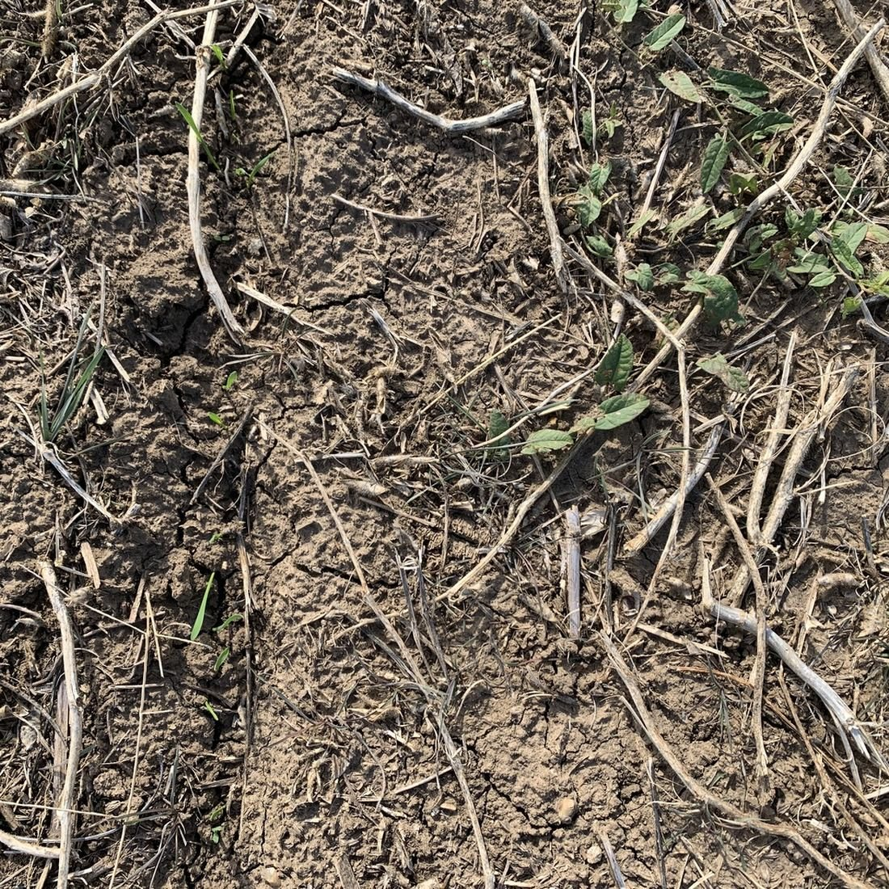
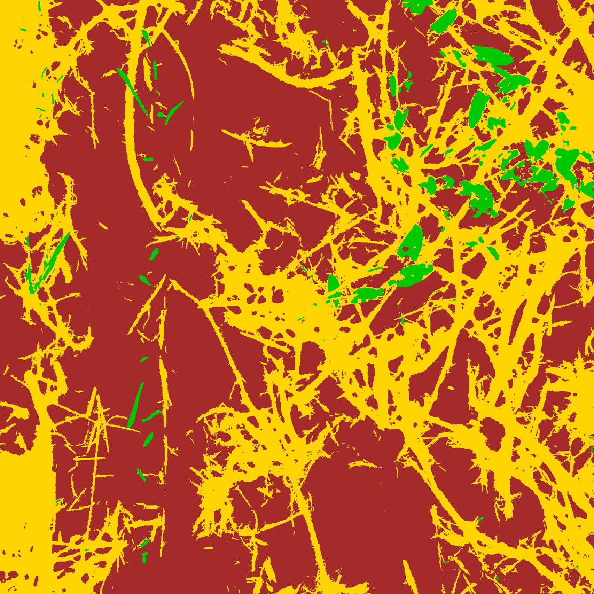
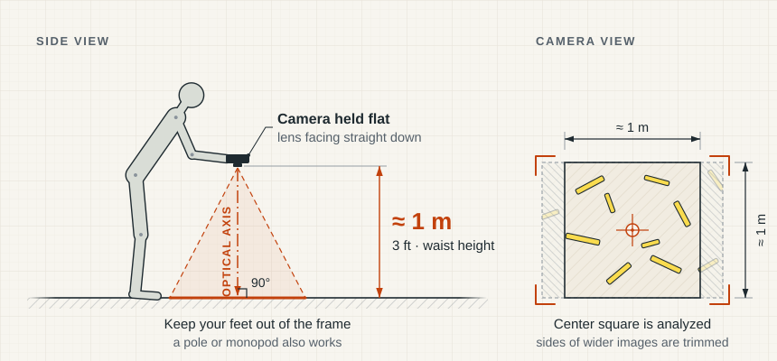

Crop residue cover from a single photo.
Stover classifies every pixel of a downward-facing field photo as crop residue, green canopy cover, or bare soil.
Developed by the Soil Water Processes Lab · Kansas State University, Department of Agronomy


photo classifiedTotal ground cover is residue plus canopy.
Where ground cover matters
Applications include quantifying residue cover after tillage and planting, soil erosion and water conservation studies, soil evaporation studies, soil carbon studies, and ground truth for satellite and drone estimates of ground cover.
From heavy stover to bare, cracked soil.
Examples of dense stover, weathered straw, scattered stalks, tilled ground, and green vegetation. Hover over or tap a tile to switch between the photo and the classified image.
Field photos and pixel-level labels from the Stover dataset. Total cover is residue plus canopy. Yellow residue, green canopy, and maroon soil follow the color scheme of the associated publication.
Shoot, load, classify, export.
- 01
Take photos
Use any phone or camera. Hold it at waist height and point it straight down at about one square meter of ground.
- 02
Load images
Load one or many JPG or PNG files. Stover reads the capture time, GPS coordinates, and device from each image’s EXIF data.
- 03
Classify
A neural network classifies every pixel as residue, canopy, or soil at 1024 × 1024 pixels (about 1 mm per pixel for photos taken about 1 m above the ground).
- 04
Export
Export data as CSV, classified images, or a PDF report.
Taking good images

Do
- Take images at waist height (about 1 m or 3 ft)
- Point the camera straight down
- Take images in good illumination
- Keep the frame clear of other objects
- Make sure the image is sharp, not blurry
Don’t
- Take images from shoulder height or higher
- Tilt the camera
- Include specular reflections (glare)
- Include shoes, stakes, or flags in the frame
- Zoom in
Two ways to run it
Stover for Windows
Desktop app for large batches of photos and for video transects, with the same exports as the web app.
Download installerStover on the web
Runs in your browser with nothing to install. Use Install App to add it to your computer and use it offline.
Open the web appBoth run on your computer and work offline. Images are not uploaded anywhere. Classification is faster with a graphics card than on the processor alone.
Open dataset
Field images with pixel-level labels (soil, plant, residue). Browse a 100-image sample online.
Using Stover in your research?
Please cite the paper when you use the apps or the dataset. For questions, bug reports, or collaborations, write to andrespatrignani@ksu.edu.
Patrignani, A., Bisheh, M., & Nahitiya, D. (in press). Segmenting crop residue, canopy, and soil in field images: An open dataset and the Stover tool. Agronomy Journal.